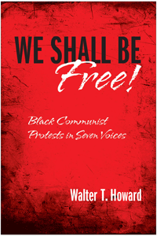

<body bgcolor="#FFFFFF" text="#000000" link="#0000FF" vlink="#CC0000" alink="#CC0000"><center><hr width="350" size="1" align="center" noshade>In primary sources, unearthing the writings of African American Communists and the forgotten promise of radical politics<hr width="350" size="1" align="center" noshade><p><a href="https://cdcshoppingcart.uchicago.edu/Cart/ChicagoBook.aspx?ISBN=9781439908594&&PRESS=temple" target="_top">Buy this book!</a> | <a href="https://cdcshoppingcart.uchicago.edu/Cart/Cart.aspx?PRESS=temple" target="_top">View Cart</a> | <a href="https://cdcshoppingcart.uchicago.edu/Cart/Cart.aspx?PRESS=temple" target="_top">Check Out</a></p><p></p></center><!--none//--><h1>We Shall Be Free!</h1>
<H2>Black Communist Protests in Seven Voices</H2>
<h3>Walter T. Howard</h3>
<P>cloth 1-4399-0859-1 $55.50, Mar 13, <FONT COLOR=#990033>Available</FONT>
<br>Electronic Book 1-4399-0861-3 $55.50 <FONT COLOR=#990033>Available</FONT>
<BR> 220 pp
5.5x8.25
</P><BLOCKQUOTE><I>"Howard presents a combination of black men and women who were active in left movements before the rise of the Civil Rights/Black Power movements. </I>We Shall Be Free!<I> provides documents and essays which are a welcome contribution to knowledge of this period."</I><br>&#151<b>Carole Boyce Davies</b>, Professor of Africana Studies and English at Cornell University and author of <I>Left of Karl Marx: The Political Life of Black Communist Claudia Jones </I></I></BLOCKQUOTE>
<P>A groundbreaking contribution to scholarship of the African American Left, <I>We Shall Be Free!</I> gives voice to black Communists and recognizes the intellectual contributions found in their protest writings. Walter Howard provides a fascinating documentary history of seven diverse and historically significant black Communists—B. D. Amis, Harry Haywood, James W. Ford, Benjamin J. Davis, Jr., Louise Thompson Patterson, William Patterson, and Claudia Jones—who attempted to foster a black culture of resistance to white racism within the workings of the Communist Party.
<P>Howard draws on FBI files, Moscow documents, and the records of the U.S. Communist Party. He surveys these black Communists addressing a wide range of vital issues such as the Great Depression, World War II, genocide and the Cold War.
<P><I>We Shall Be Free!</I> presents an important section of the African American community whose thought has been minimized, discounted, or overlooked altogether by the historical profession in general.
<BR>&nbsp;<h2>Excerpt</h2><P>Excerpt available at <a href="http://www.temple.edu/tempress">www.temple.edu/tempress</a></p>
<BR>&nbsp;<h2>Reviews</h2>
<p><i>"In Howard's book we see - over time - the evolution of the party's approach, its strategy and tactics, as it experimented with different organizational forms in its efforts to recruit African Americans and to build the black liberation and African American equality movements. This is probably one of the most important aspects of this collection of voices.... </i>We Shall Be Free!<i> is an important contribution to African American and Communist history."</i><br>&#151;<b><i>People's World</i></b>
<p><i>"Howard’s important collection of writing by black Communists bridges two exciting developments in scholarship to which Howard has been a long-time contributor.... </i>We Shall Be Free!</i> is an invaluable contribution.... It helps lift the shadow, especially over figures like [Claudia] Jones, Louise Patterson, and B. D. Amis, without whom the complete story of the U.S. left and black twentieth century history cannot be told. Casting more light onto the archive of black communist voices is essential to this task."</i> <br>&#151;<b><i>Journal for the Study of Radicalism</i></b>
<p><i>"The most illuminating and engaging materials in the volume are those that reflect something of the internal lives of Party activists…. These documents do more to restore fully the voices of these African American organizers than do their published writings, because they illuminate Communist practice over polemics…. As interest in African American radicalism and the long civil rights movement remains strong among scholars and activists, this accessible volume should prove to be a welcome addition to the existing literature on the experiences of African Americans in the Communist Party."</i> <br>&#151;<b><i>Oral History Review</i></b>
<p><i>"</i>We Shall Be Free!<i> effectively incorporates historic texts—some fairly well known and others previously unpublished—about the effort to protest social injustice in diverse contexts, above all the Great Depression and the Cold War…. [W]hat is impressive in </i>We Shall Be Free!<i> is to see the justified anger of Harry Haywood, Claudia Jones, et al., turned into an attempt to understand the social conditions of economic oppression and political persecution…. </i>We Shall Be Free!<i> provides students and scholars of the African American Left with an unusual documentary account of the Black presence in U.S. Communism. Perhaps it can be part of a new and productive conversation."</i> <br>&#151;<b><i>American Communist History</i></b>
<BR>&nbsp;<h2>Contents</h2><P>
<p>Preface and Acknowledgments
<br>
<br>Prologue: The CPUSA and Black America, 1919 -1928
<br>Chronology: The CPUSA and African Americans
<br>
<br>B. D. Amis
<br>Harry Haywood
<br>James W. Ford
<br>Benjamin J. Davis Jr.
<br>Louise Thompson Patterson
<br>William L. Patterson
<br>Claudia Jones
<br>
<br>Epilogue
<br>
<br>Selected Bibliography
<br>Index
</P><BR>&nbsp;<H2>About the Author(s)</H2>
<P><b>Walter T. Howard</b> (1951-2015) was Professor of American History at Bloomsburg University in northeastern Pennsylvania. He was the editor of <I>B.D. Amis, African American Radical: A Short Anthology of His Writings and Speeches</I> and the author of <I>Lynchings: Extralegal Violence in Florida during the 1930s</I> as well as <i><a href="1893_reg.html" target="_top">Black Communists Speak on Scottsboro: A Documentary History</a></i>.</P>
<BR><H2>Subject Categories</H2>
<p><A HREF="/tempress/african.html" TARGET="_top">African American Studies</a>
<BR><A HREF="/tempress/history.html" TARGET="_top">History</a>
<BR><A HREF="/tempress/race.html" TARGET="_top">Race and Ethnicity</a>
</p>
<p align="center"><a href="https://cdcshoppingcart.uchicago.edu/Cart/ChicagoBook.aspx?ISBN=9781439908594&&PRESS=temple" target="_top">Buy this book!</a> | <a href="https://cdcshoppingcart.uchicago.edu/Cart/Cart.aspx?PRESS=temple" target="_top">View Cart</a> | <a href="https://cdcshoppingcart.uchicago.edu/Cart/Cart.aspx?PRESS=temple" target="_top">Check Out</a></p><p><font face="Arial" size="1"><a href="copyright.html" onMouseOver="window.status='Web Copyright Policy';return true;" onMouseOut="window.status=''" title="Web Copyright Policy">&copy;</a> 2015 <a href="http://www.temple.edu" target="new" onMouseOver="window.status='Link to Temple University home page';return true;" onMouseOut="window.status=''" title="Link to Temple University home page">Temple University</a>. All Rights Reserved. http://www.temple.edu/tempress/titles/2205_reg.html</font></p>